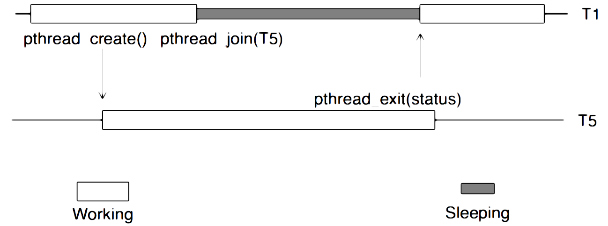

Pthread In-depth
There are more to using Pthread than just pthread_create() and pthread_join(). In this chapter we will be going through pthread_exit() ,pthread_cancel() ,pthread_equal() and some of the problems that we might encounter while using thread in our program.
Returning Status and Memory
Sometimes you specifically want to wait for a thread to exit. Perhaps you’ve created 20 threads to do 20 pieces of a task and you can’t continue until they are all finished. One way to do this, is to call the wait (in POSIX, join) function on each of the desired thread IDs. The caller will block until each of the specified threads has exited. The other way is to use normal synchronization functions.

pthread_exit()
void pthread_exit(void *value_ptr);
The pthread_exit() function terminates the calling thread, making its exit status available to any waiting threads. Normally, a thread terminates by returning from the start routine that was specified in the pthread_create() call which started it. An implicit call to pthread_exit() occurs when any thread returns from its start routine. (With the exception of the initial thread, at which time an implicit call to exit() occurs). The pthread_exit() function provides an interface similar to exit() but on a per-thread basis.
int main() {
pthread_t tid1, tid2;
pthread_create(&tid1, NULL, some_func, "value1");
pthread_create(&tid2, NULL, some_func, "value2");
pthread_exit(NULL);
// No code is run after pthread_exit
// However process will continues until both threads have finished
}
pthread_cancel()
int pthread_cancel(pthread_t thread);
pthread_cancel() requests cancelation of the target thread. The target thread will be cancel according to its cancelability state. As shown in the table below:
| Cancelability | State | Type |
|---|---|---|
| Disabled | PTHREAD_CANCEL_DISABLE |
PTHREAD_CANCEL_DEFERRED |
| Disabled | PTHREAD_CANCEL_DISABLE |
PTHREAD_CANCEL_ASYNCHRONOUS |
| Deferred | PTHREAD_CANCEL_DISABLE |
PTHREAD_CANCEL_DEFERRED |
| Asynchronous | PTHREAD_CANCEL_DISABLE |
PTHREAD_CANCEL_ASYNCHRONOUS |
The default cancelability state is deferred.
When cancelability is disabled, all cancels are held pending in the target thread until the thread changes the cancelability. When cancelability is deferred, all cancels are held pending in the target thread until the thread changes the cancelability, calls a function which is a cancelation point or calls pthread_testcancel(), thus creating a cancelation point. When cancelability is asynchronous, all cancels are acted upon immediately, interrupting the thread with its processing.
In practice, pthread_cancel() is rarely used because it does not give a thread an opportunity to clean up after itself (for example, it may have opened some files). An alternative implementation is to use a boolean (int) variable whose value is used to inform other threads that they should finish and clean up.
pthread_equal()
int pthread_equal(pthread_t t1, pthread_t t2);
pthread_equal() compares two Pthread and returns an integer value to indicate the equality, a non-zero value will be return if t1 and t2 are equal, 0 will return otherwise.
#include <pthread.h>
#include <stdio.h>
pthread_t global;
void *target(void *arg)
{
printf("Away from main thread now...\n");
global = pthread_self();
return NULL;
}
int main(int argc, char **argv)
{
pthread_t tid;
if(pthread_create(&thread, NULL, target, NULL) != 0)
{
perror("Error while creating threads");
exit(1);
}
if (!pthread_equal(tid, global)) {
perror("Undefined behaviour occurred while comparing threads.");
exit(1);
}
printf("Both threads are the same");
return 0;
}